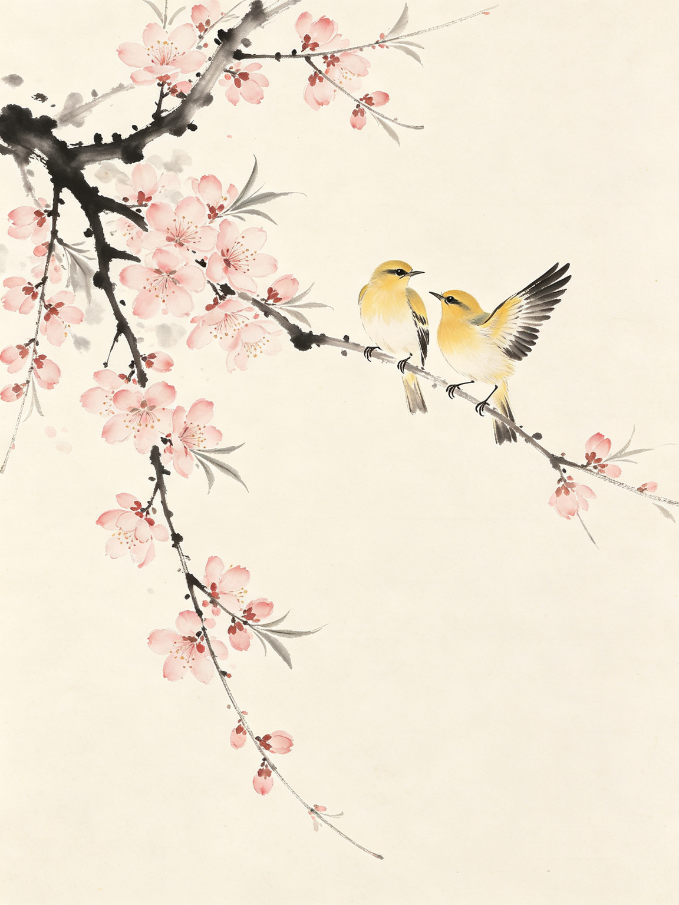

一叶云舟，泊于春江。以极简 Spring Boot 服务，习 K8s 部署之全法 —— 打包、造像、上云、访问，皆在眼前。
demo-service 是一个最小可运行的 Spring Boot 服务，专为在一主二从的 Kubernetes 集群中练习部署流程而生。从本地打包到镜像上云，每一步都留有清晰的脚印。
项目以 Deployment 承载 2 个副本，以 NodePort 类型 Service 对外暴露 30080 端口；容器内置就绪与存活探针，并通过 Downward API 注入自身 Pod 与环境信息，供访问时查验。

一幅五联卷：本地打包、构建镜像、推送仓库、部署上云、对外访问 —— 一条完整的 K8s 部署链路。
Maven 构建出可执行 Jar 包，是云上一切的起点。
mvn clean package多阶段 Dockerfile 编译并产出精简运行时镜像。
docker build -t demo-service:1.0.0 .镜像入私有仓库，各 Worker 节点方能拉取。
push → 192.168.139.30:5000kubectl 应用清单，Deployment 调度出 2 个 Pod。
kubectl apply -f k8s/NodePort 承载流量，Service 于副本间轮转。
curl 节点IP:30080/helloDeployment 与 Service 两幅清单，定义了服务的生息与门户。数据取自项目内 k8s/deployment.yaml 与 service.yaml。
读法：每一个 Pod 最低可获 100m CPU / 128Mi 内存，最高被限定在 500m CPU / 512Mi 内存 —— 弹性之余，亦防一人独吞云间资粮。
服务启动后监听 8080 端口，四道接口各司其职：报信、报号、报安、报境。
| 路径 | 说明 | 返回 |
|---|---|---|
GET / |
服务信息总览：应用名、hostname 与当前时间 | 服务信息 · JSON |
GET /hello |
回报当前 Pod / 容器 hostname，多访几次可见负载均衡 | hostname · 文本 |
GET /health |
健康检查端点，供就绪与存活探针轮询 | OK · 文本 |
GET /env |
回显 K8s Downward API 注入的环境变量 | 环境变量 · JSON |
几行 kubectl，便是与集群对话的笔墨。悬停可复制。
从本地一壶茶，到云上一叶舟 —— 循着这八步，走完 Kubernetes 部署的全部功课。
mvn clean package -DskipTests 产出 target/demo-1.0-SNAPSHOT.jar
java -jar 起服务，先以 curl /hello /health 验其生机
docker build -t demo-service:1.0.0 . 多阶段构建，留精简运行时
推至 Harbor 私有仓库，或直导入各 Worker 节点，令集群可及
kubectl apply -f k8s/ 双 Pod 落子 worker1、worker2
curl http://<节点IP>:30080/hello 多访几次，见轮转
kubectl scale --replicas=3 或回 1，看调度伸缩之妙
set image 更新版本，rollout undo 亦可从容回退